Algebra II — Advanced algebra
Polynomials, logs, sequences and complex numbers. This guide contains 72 chapter-level worked lessons, review questions, answers, and linked illustrations.
Contents — select a chapter
Complex numbers
i²=−1; complex numbers have real and imaginary components.
(2+3i)+(4−i)=6+2i.
- Combine real parts
- Combine i coefficients.
What is i^4 as a real number?
Hint: i²=−1 so i⁴=1.
Show answer and verify
1
Check the units, inputs and intermediate steps. Different solution methods may be valid.
Polynomial evaluation
Substitute x and compute by Horner or powers.
2x³−x+1 at x=2 gives 15.
- Calculate 2³=8
- Compute 2·8−2+1=15.
Evaluate x^3−4x at x=3.
Hint: 27 minus twelve.
Show answer and verify
15
Check the units, inputs and intermediate steps. Different solution methods may be valid.
Polynomial roots
If f(a)=0 then x−a is a factor of polynomial f.
x²−4=(x−2)(x+2).
- Difference of squares
- Roots +2 and −2.
Positive root of x²−49=0?
Hint: Take square root.
Show answer and verify
7
Check the units, inputs and intermediate steps. Different solution methods may be valid.
Logarithm definition
log_b(x)=y exactly when b^y=x, with b>0,b≠1,x>0.
log₂(32)=5.
- 2⁵=32
- Therefore logarithm five.
log(1000,10)
Hint: Ten to the third is 1000.
Show answer and verify
3
Check the units, inputs and intermediate steps. Different solution methods may be valid.
Logarithm properties
log(ab)=log(a)+log(b) for positive a,b and fixed valid base.
ln(e³)=3.
- Recognize ln and exp are inverses
- Apply ln(e³)=3.
ln(exp(4))
Hint: ln and exp undo each other.
Show answer and verify
4
Check the units, inputs and intermediate steps. Different solution methods may be valid.
Arithmetic sequences
a_n=a_1+(n−1)d for constant difference d.
a1=4,d=3,a5=16.
- There are four increases from term 1 to term 5
- Compute 4 + (5−1)·3 =16.
First term 7,difference 5. Find term 10.
Hint: 7+9×5.
Show answer and verify
52
Check the units, inputs and intermediate steps. Different solution methods may be valid.
Geometric sequences
a_n=a_1·r^(n−1) for common ratio r.
a1=3,r=2 gives a4=24.
- Term 4 has three ratio steps
- Compute 3·2³=24.
a1=5,r=3. Find a4.
Hint: Five times 27.
Show answer and verify
135
Check the units, inputs and intermediate steps. Different solution methods may be valid.
Binomial theorem
Expand (a+b)^n using binomial coefficients choose(n,k).
(x+1)³=x³+3x²+3x+1.
- Coefficients 1,3,3,1
- Powers descend/ascend.
What is coefficient of x² in (x+2)^3?
Hint: Choose(3,2) times 2.
Show answer and verify
6
Check the units, inputs and intermediate steps. Different solution methods may be valid.
Inverse functions
Reverse inputs and outputs; verify f⁻¹(f(x))=x.
f(x)=3x+2 => f⁻¹(x)=(x−2)/3.
- y=3x+2
- Swap variables
- Solve for y.
For f(x)=2x+5, find f⁻¹(13).
Hint: (13−5)/2.
Show answer and verify
4
Check the units, inputs and intermediate steps. Different solution methods may be valid.
Conic sections
Identify circle, parabola, ellipse, hyperbola by standard equations.
x²+y²=25 is a circle of radius 5.
- Compare with x²+y²=r²
- r=√25.
For x²+y²=49, what is radius?
Hint: Square root of 49.
Show answer and verify
7
Check the units, inputs and intermediate steps. Different solution methods may be valid.
Long division of polynomials
Long division of polynomials: Group like powers and apply exponent and factorization rules. A polynomial is a finite sum of nonnegative integer powers of a variable.
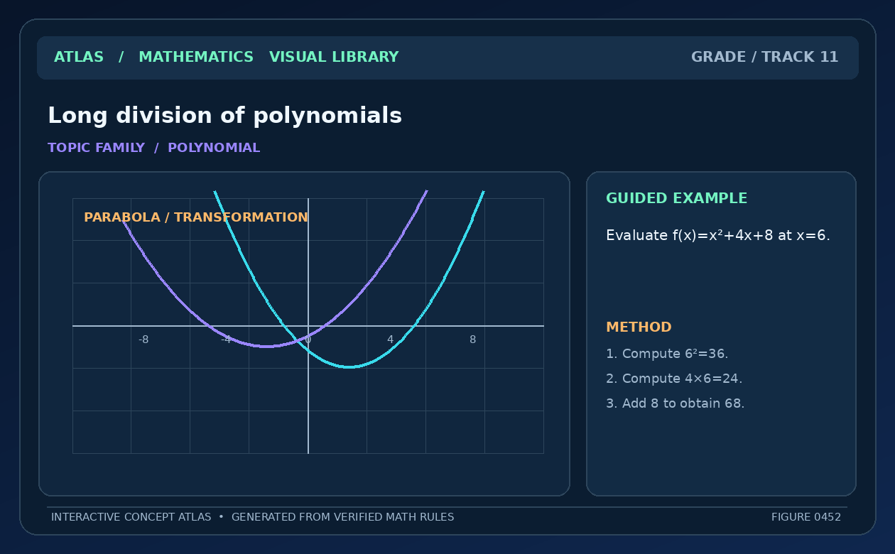
Evaluate f(x)=x²+4x+8 at x=6.
- Compute 6²=36.
- Compute 4×6=24.
- Add 8 to obtain 68.
Find f(7) for f(x)=x²+4x+8.
Hint: Square x first, multiply coefficient, then add.
Show answer and verify
85
Check the units, inputs and intermediate steps. Different solution methods may be valid.
Synthetic division
Synthetic division: Group like powers and apply exponent and factorization rules. A polynomial is a finite sum of nonnegative integer powers of a variable.
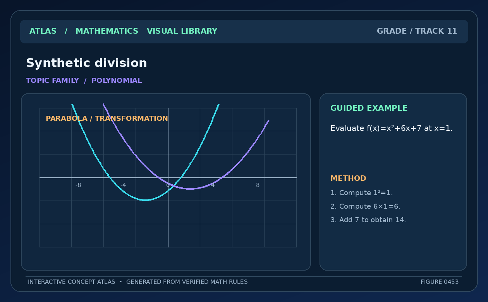
Evaluate f(x)=x²+6x+7 at x=1.
- Compute 1²=1.
- Compute 6×1=6.
- Add 7 to obtain 14.
Find f(2) for f(x)=x²+6x+7.
Hint: Square x first, multiply coefficient, then add.
Show answer and verify
23
Check the units, inputs and intermediate steps. Different solution methods may be valid.
Remainder theorem
Remainder theorem: Group like powers and apply exponent and factorization rules. A polynomial is a finite sum of nonnegative integer powers of a variable.
Evaluate f(x)=x²+11x+11 at x=2.
- Compute 2²=4.
- Compute 11×2=22.
- Add 11 to obtain 37.
Find f(3) for f(x)=x²+11x+11.
Hint: Square x first, multiply coefficient, then add.
Show answer and verify
53
Check the units, inputs and intermediate steps. Different solution methods may be valid.
Factor theorem
Factor theorem: Group like powers and apply exponent and factorization rules. A polynomial is a finite sum of nonnegative integer powers of a variable.
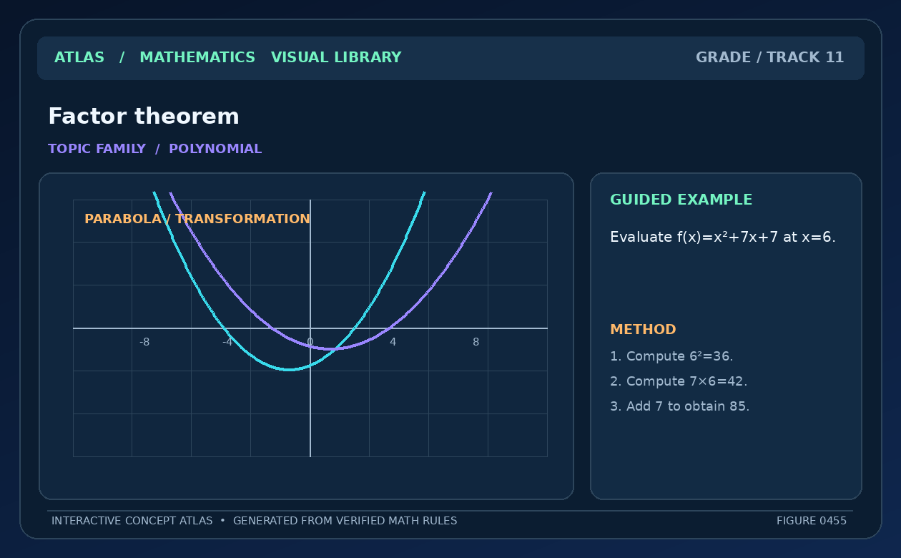
Evaluate f(x)=x²+7x+7 at x=6.
- Compute 6²=36.
- Compute 7×6=42.
- Add 7 to obtain 85.
Find f(7) for f(x)=x²+7x+7.
Hint: Square x first, multiply coefficient, then add.
Show answer and verify
105
Check the units, inputs and intermediate steps. Different solution methods may be valid.
Polynomial roots
Polynomial roots: Group like powers and apply exponent and factorization rules. A polynomial is a finite sum of nonnegative integer powers of a variable.
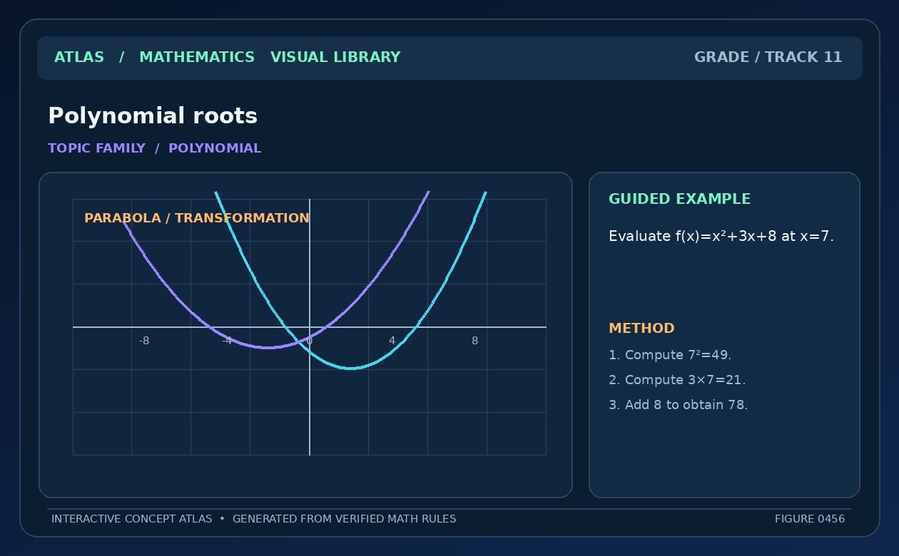
Evaluate f(x)=x²+3x+8 at x=7.
- Compute 7²=49.
- Compute 3×7=21.
- Add 8 to obtain 78.
Find f(8) for f(x)=x²+3x+8.
Hint: Square x first, multiply coefficient, then add.
Show answer and verify
96
Check the units, inputs and intermediate steps. Different solution methods may be valid.
Multiplicity of zeros
Multiplicity of zeros: Group like powers and apply exponent and factorization rules. A polynomial is a finite sum of nonnegative integer powers of a variable.
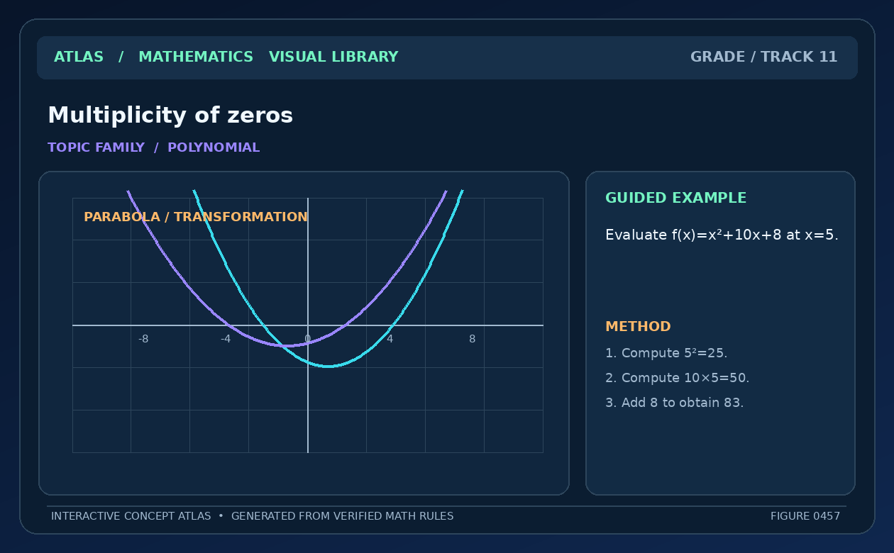
Evaluate f(x)=x²+10x+8 at x=5.
- Compute 5²=25.
- Compute 10×5=50.
- Add 8 to obtain 83.
Find f(6) for f(x)=x²+10x+8.
Hint: Square x first, multiply coefficient, then add.
Show answer and verify
104
Check the units, inputs and intermediate steps. Different solution methods may be valid.
End behavior of polynomials
End behavior of polynomials: Group like powers and apply exponent and factorization rules. A polynomial is a finite sum of nonnegative integer powers of a variable.
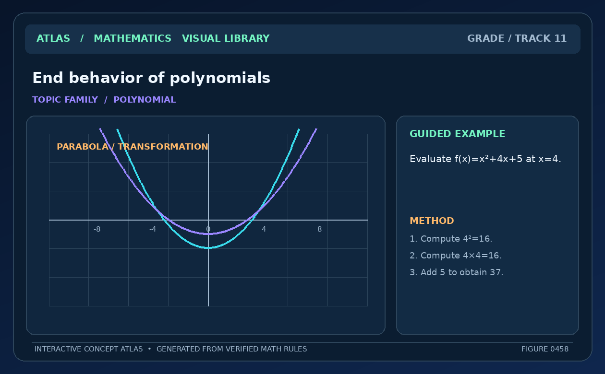
Evaluate f(x)=x²+4x+5 at x=4.
- Compute 4²=16.
- Compute 4×4=16.
- Add 5 to obtain 37.
Find f(5) for f(x)=x²+4x+5.
Hint: Square x first, multiply coefficient, then add.
Show answer and verify
50
Check the units, inputs and intermediate steps. Different solution methods may be valid.
Complex polynomial zeros
Complex polynomial zeros: Group like powers and apply exponent and factorization rules. A polynomial is a finite sum of nonnegative integer powers of a variable.
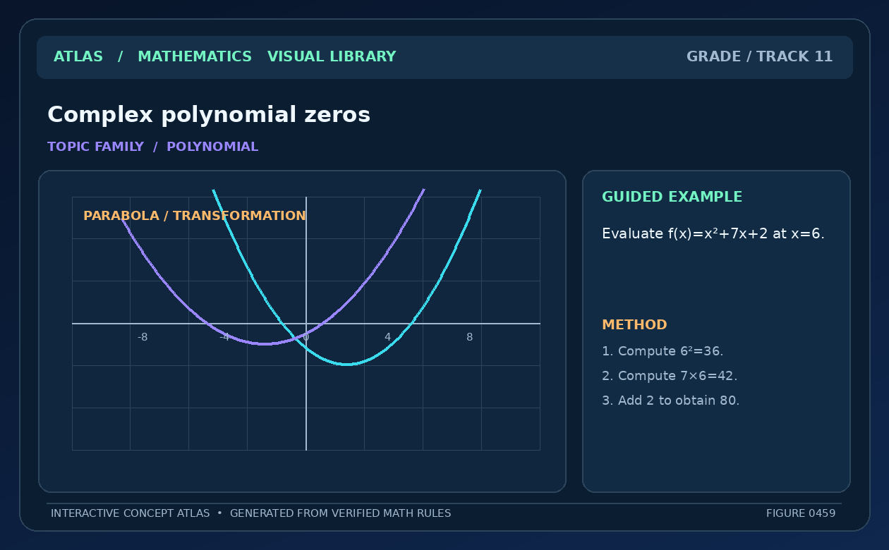
Evaluate f(x)=x²+7x+2 at x=6.
- Compute 6²=36.
- Compute 7×6=42.
- Add 2 to obtain 80.
Find f(7) for f(x)=x²+7x+2.
Hint: Square x first, multiply coefficient, then add.
Show answer and verify
100
Check the units, inputs and intermediate steps. Different solution methods may be valid.
Polynomial identity proofs
Polynomial identity proofs: Group like powers and apply exponent and factorization rules. A polynomial is a finite sum of nonnegative integer powers of a variable.
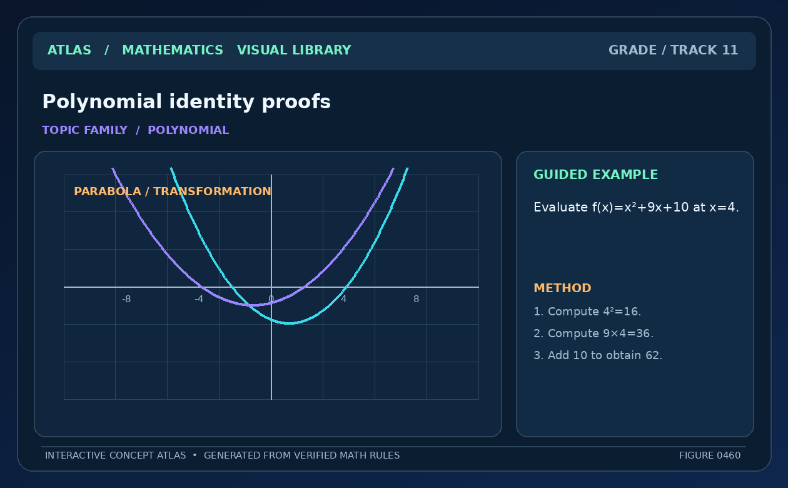
Evaluate f(x)=x²+9x+10 at x=4.
- Compute 4²=16.
- Compute 9×4=36.
- Add 10 to obtain 62.
Find f(5) for f(x)=x²+9x+10.
Hint: Square x first, multiply coefficient, then add.
Show answer and verify
80
Check the units, inputs and intermediate steps. Different solution methods may be valid.
Polynomial inequalities
Polynomial inequalities: Group like powers and apply exponent and factorization rules. A polynomial is a finite sum of nonnegative integer powers of a variable.
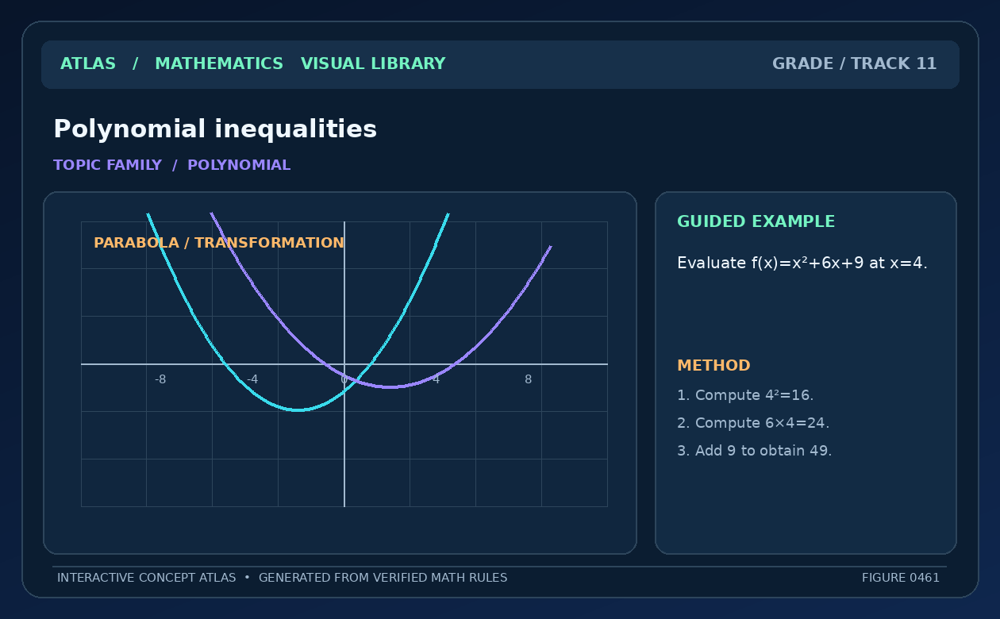
Evaluate f(x)=x²+6x+9 at x=4.
- Compute 4²=16.
- Compute 6×4=24.
- Add 9 to obtain 49.
Find f(5) for f(x)=x²+6x+9.
Hint: Square x first, multiply coefficient, then add.
Show answer and verify
64
Check the units, inputs and intermediate steps. Different solution methods may be valid.
Conic sections and parabolas
Conic sections and parabolas: For y=ax²+bx+c with a≠0, the axis of symmetry is x=−b/(2a). The sign of a determines whether the parabola opens up or down.
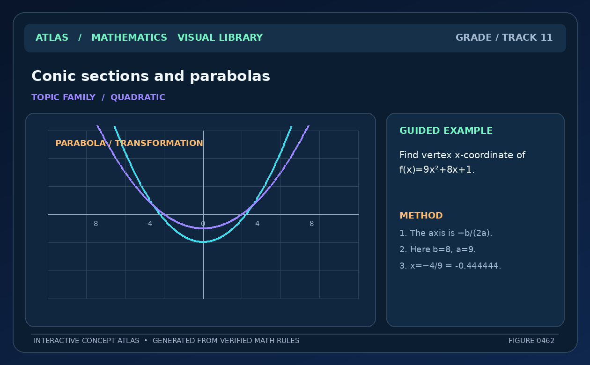
Find vertex x-coordinate of f(x)=9x²+8x+1.
- The axis is −b/(2a).
- Here b=8, a=9.
- x=−4/9 = -0.444444.
For f(x)=4x²+18x+1, find the vertex x-coordinate.
Hint: Use −b/(2a), not −b/a.
Show answer and verify
-2.25
Check the units, inputs and intermediate steps. Different solution methods may be valid.
Quadratic transformations
Quadratic transformations: For y=ax²+bx+c with a≠0, the axis of symmetry is x=−b/(2a). The sign of a determines whether the parabola opens up or down.
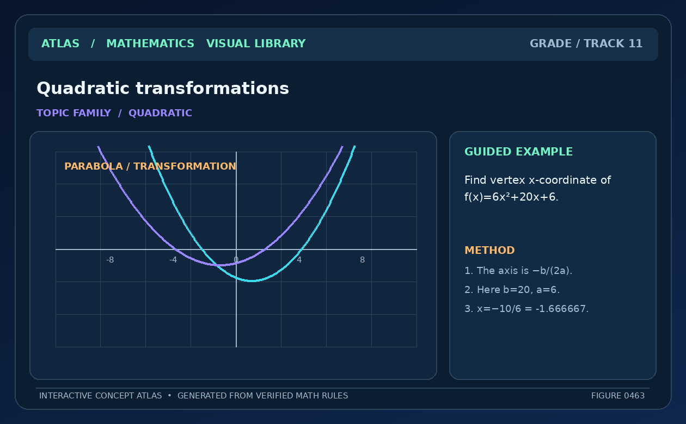
Find vertex x-coordinate of f(x)=6x²+20x+6.
- The axis is −b/(2a).
- Here b=20, a=6.
- x=−10/6 = -1.666667.
For f(x)=10x²+12x+6, find the vertex x-coordinate.
Hint: Use −b/(2a), not −b/a.
Show answer and verify
-0.6
Check the units, inputs and intermediate steps. Different solution methods may be valid.
Completing squares in conics
Completing squares in conics: For y=ax²+bx+c with a≠0, the axis of symmetry is x=−b/(2a). The sign of a determines whether the parabola opens up or down.
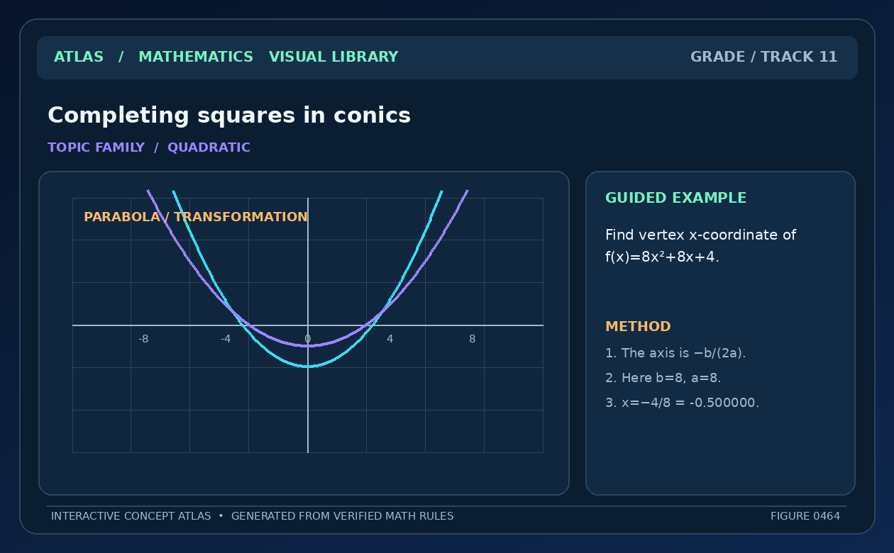
Find vertex x-coordinate of f(x)=8x²+8x+4.
- The axis is −b/(2a).
- Here b=8, a=8.
- x=−4/8 = -0.500000.
For f(x)=4x²+16x+4, find the vertex x-coordinate.
Hint: Use −b/(2a), not −b/a.
Show answer and verify
-2.0
Check the units, inputs and intermediate steps. Different solution methods may be valid.
Discriminants and roots
Discriminants and roots: For y=ax²+bx+c with a≠0, the axis of symmetry is x=−b/(2a). The sign of a determines whether the parabola opens up or down.
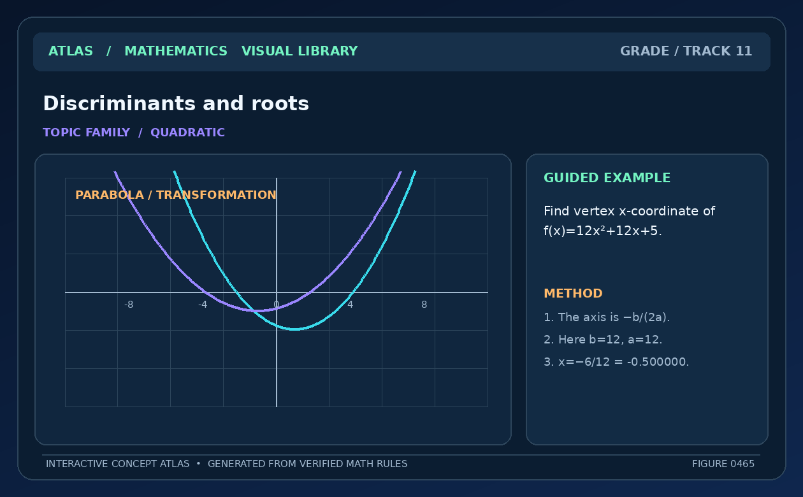
Find vertex x-coordinate of f(x)=12x²+12x+5.
- The axis is −b/(2a).
- Here b=12, a=12.
- x=−6/12 = -0.500000.
For f(x)=6x²+24x+5, find the vertex x-coordinate.
Hint: Use −b/(2a), not −b/a.
Show answer and verify
-2.0
Check the units, inputs and intermediate steps. Different solution methods may be valid.
Exponential growth and decay
Exponential growth and decay: Use exponential models when a quantity changes by a fixed fraction per period. Compounding multiplies a balance by (1+r) at each complete period.
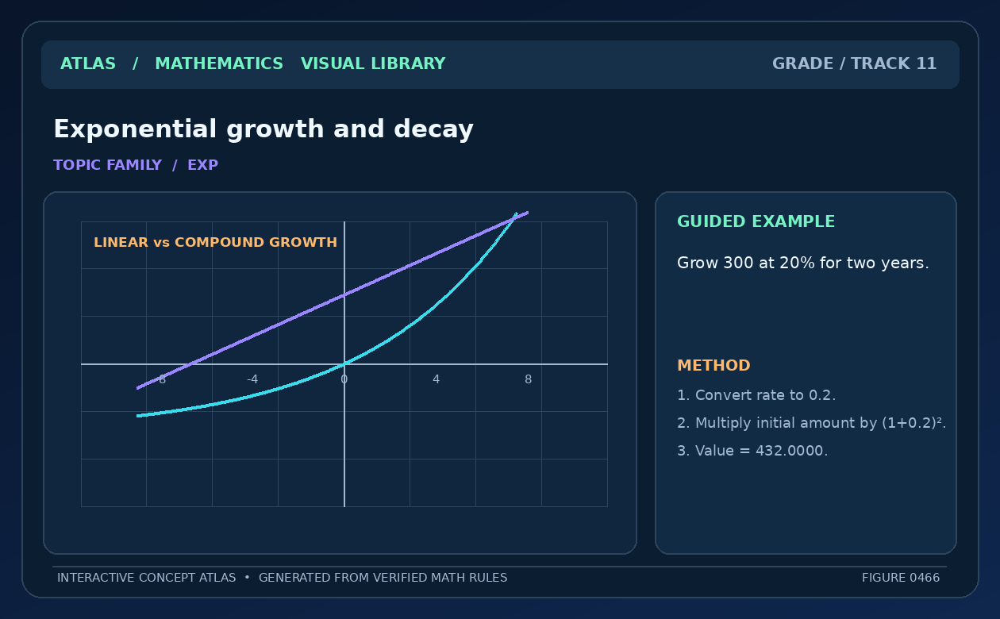
Grow 300 at 20% for two years.
- Convert rate to 0.2.
- Multiply initial amount by (1+0.2)².
- Value = 432.0000.
Grow 200 by 20% for one year.
Hint: Multiply once by 1 plus the decimal growth rate.
Show answer and verify
240.0
Check the units, inputs and intermediate steps. Different solution methods may be valid.
Compound interest with exponents
Compound interest with exponents: Use exponential models when a quantity changes by a fixed fraction per period. Compounding multiplies a balance by (1+r) at each complete period.
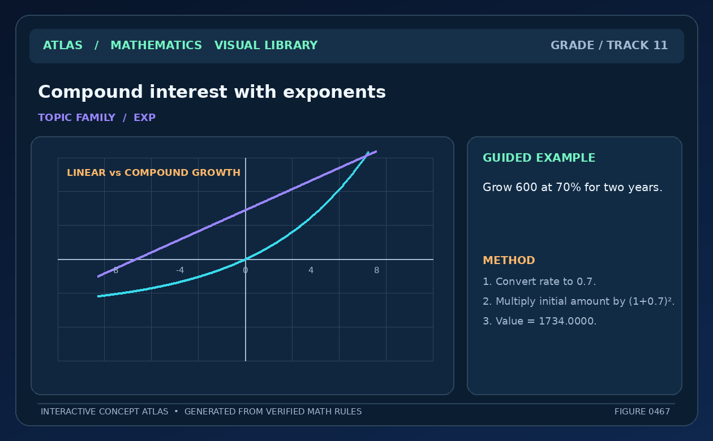
Grow 600 at 70% for two years.
- Convert rate to 0.7.
- Multiply initial amount by (1+0.7)².
- Value = 1734.0000.
Grow 700 by 70% for one year.
Hint: Multiply once by 1 plus the decimal growth rate.
Show answer and verify
1190.0
Check the units, inputs and intermediate steps. Different solution methods may be valid.
Exponential equations
Exponential equations: Use exponential models when a quantity changes by a fixed fraction per period. Compounding multiplies a balance by (1+r) at each complete period.
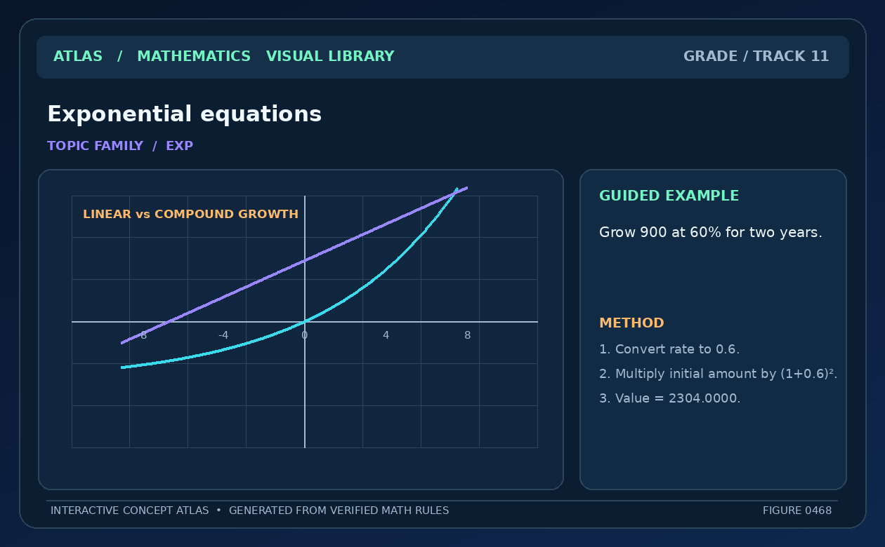
Grow 900 at 60% for two years.
- Convert rate to 0.6.
- Multiply initial amount by (1+0.6)².
- Value = 2304.0000.
Grow 1000 by 60% for one year.
Hint: Multiply once by 1 plus the decimal growth rate.
Show answer and verify
1600.0
Check the units, inputs and intermediate steps. Different solution methods may be valid.
Growth and decay constants
Growth and decay constants: Use exponential models when a quantity changes by a fixed fraction per period. Compounding multiplies a balance by (1+r) at each complete period.
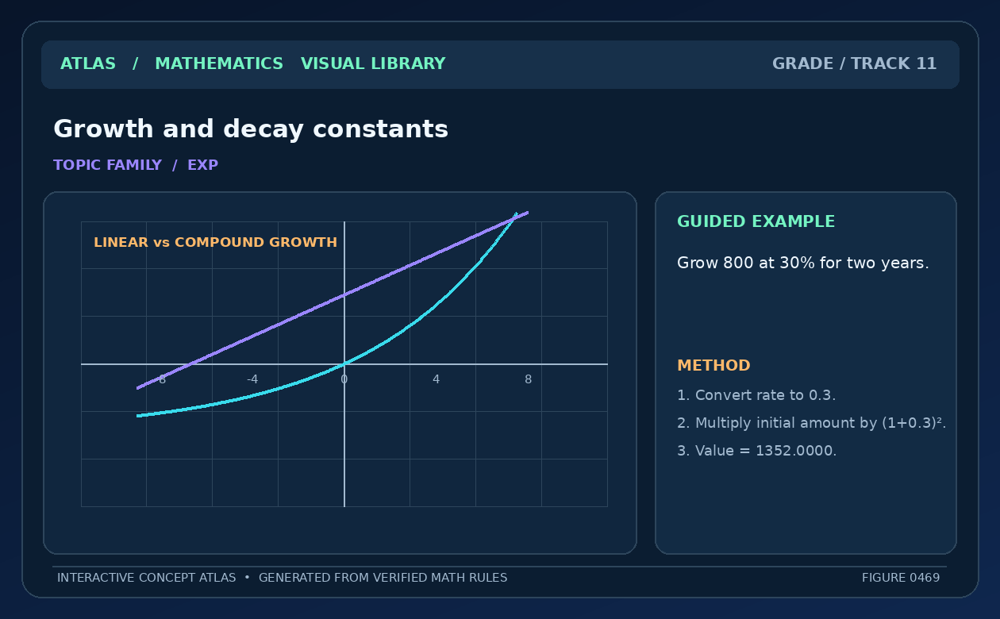
Grow 800 at 30% for two years.
- Convert rate to 0.3.
- Multiply initial amount by (1+0.3)².
- Value = 1352.0000.
Grow 1100 by 30% for one year.
Hint: Multiply once by 1 plus the decimal growth rate.
Show answer and verify
1430.0
Check the units, inputs and intermediate steps. Different solution methods may be valid.
Half-life mathematics
Half-life mathematics: Use exponential models when a quantity changes by a fixed fraction per period. Compounding multiplies a balance by (1+r) at each complete period.
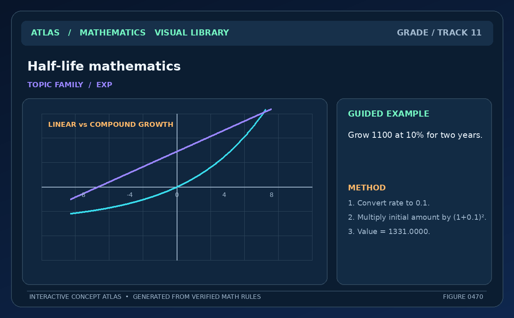
Grow 1100 at 10% for two years.
- Convert rate to 0.1.
- Multiply initial amount by (1+0.1)².
- Value = 1331.0000.
Grow 1000 by 10% for one year.
Hint: Multiply once by 1 plus the decimal growth rate.
Show answer and verify
1100.0
Check the units, inputs and intermediate steps. Different solution methods may be valid.
Continuous exponential models
Continuous exponential models: Use exponential models when a quantity changes by a fixed fraction per period. Compounding multiplies a balance by (1+r) at each complete period.
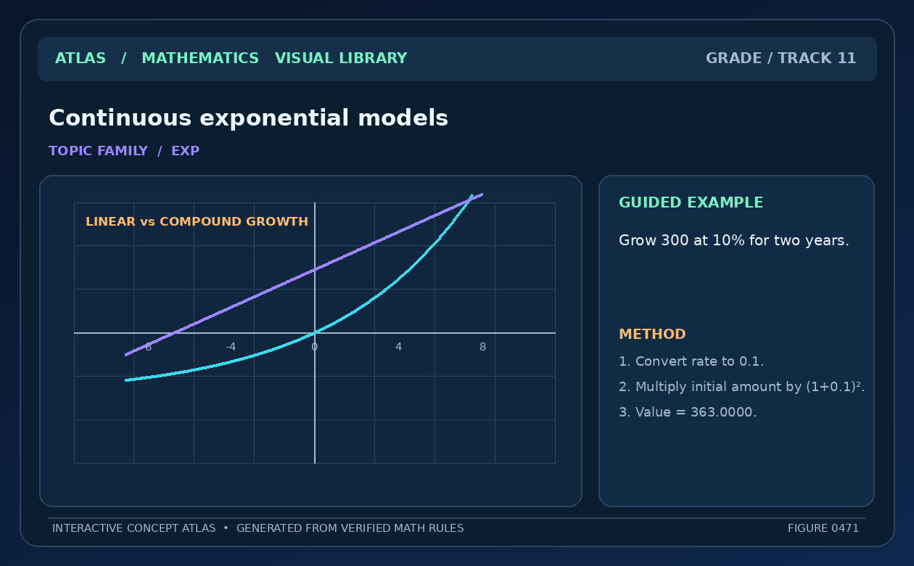
Grow 300 at 10% for two years.
- Convert rate to 0.1.
- Multiply initial amount by (1+0.1)².
- Value = 363.0000.
Grow 400 by 10% for one year.
Hint: Multiply once by 1 plus the decimal growth rate.
Show answer and verify
440.00000000000006
Check the units, inputs and intermediate steps. Different solution methods may be valid.
Logarithm definitions
Logarithm definitions: A logarithm gives the exponent required to obtain a value from a base. Logarithmic inputs must be positive for real-valued logs.
Calculate log base 3 of 9.
- 3²=9.
- The logarithm asks which exponent yields 9.
- Answer 2.
What is log base 9 of 729?
Hint: Logarithm is the inverse of exponentiation.
Show answer and verify
3
Check the units, inputs and intermediate steps. Different solution methods may be valid.
Properties of logarithms
Properties of logarithms: A logarithm gives the exponent required to obtain a value from a base. Logarithmic inputs must be positive for real-valued logs.
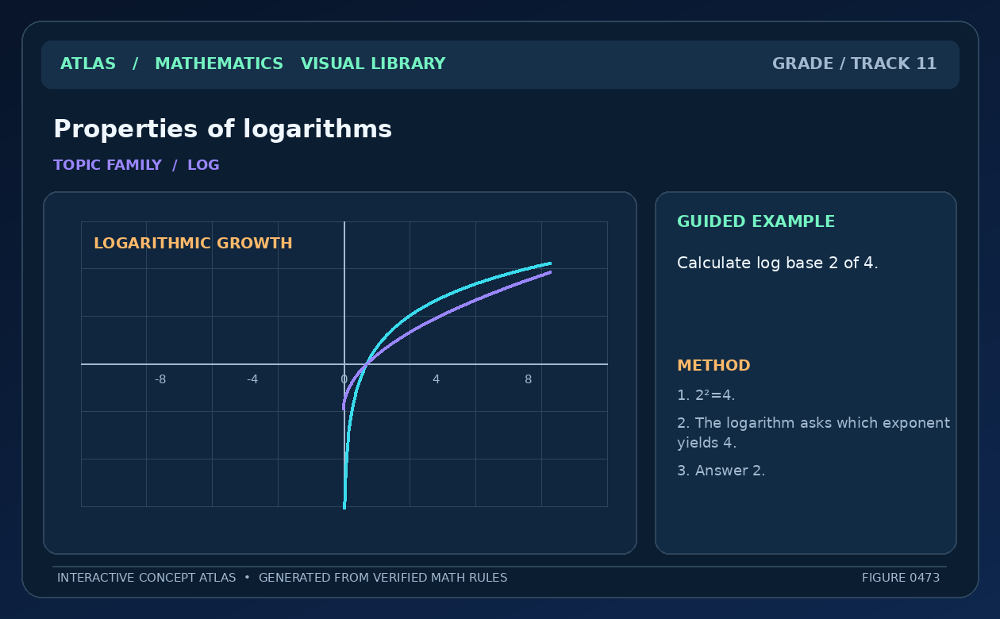
Calculate log base 2 of 4.
- 2²=4.
- The logarithm asks which exponent yields 4.
- Answer 2.
What is log base 4 of 64?
Hint: Logarithm is the inverse of exponentiation.
Show answer and verify
3
Check the units, inputs and intermediate steps. Different solution methods may be valid.
Change-of-base formula
Change-of-base formula: A logarithm gives the exponent required to obtain a value from a base. Logarithmic inputs must be positive for real-valued logs.
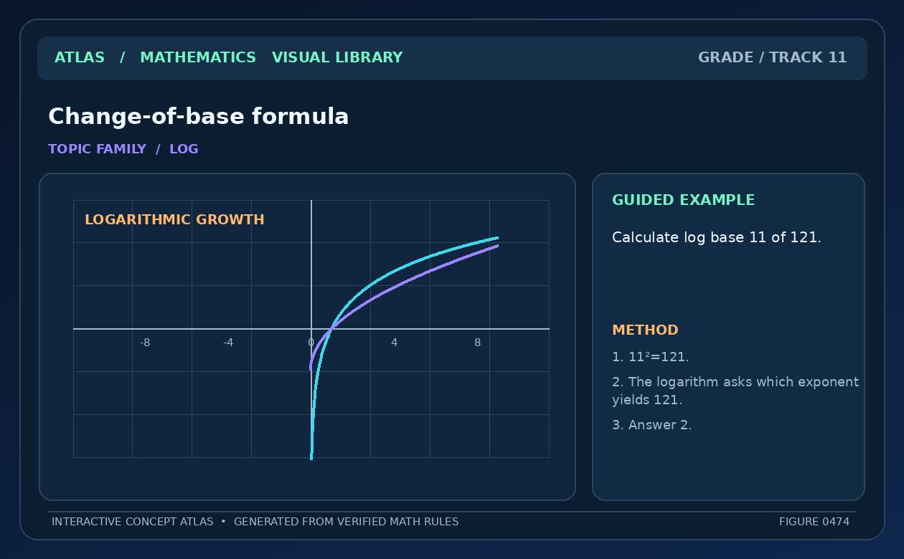
Calculate log base 11 of 121.
- 11²=121.
- The logarithm asks which exponent yields 121.
- Answer 2.
What is log base 2 of 8?
Hint: Logarithm is the inverse of exponentiation.
Show answer and verify
3
Check the units, inputs and intermediate steps. Different solution methods may be valid.
Natural logarithms
Natural logarithms: A logarithm gives the exponent required to obtain a value from a base. Logarithmic inputs must be positive for real-valued logs.
Calculate log base 4 of 16.
- 4²=16.
- The logarithm asks which exponent yields 16.
- Answer 2.
What is log base 4 of 64?
Hint: Logarithm is the inverse of exponentiation.
Show answer and verify
3
Check the units, inputs and intermediate steps. Different solution methods may be valid.
Solving logarithmic equations
Solving logarithmic equations: A logarithm gives the exponent required to obtain a value from a base. Logarithmic inputs must be positive for real-valued logs.
Calculate log base 4 of 16.
- 4²=16.
- The logarithm asks which exponent yields 16.
- Answer 2.
What is log base 5 of 125?
Hint: Logarithm is the inverse of exponentiation.
Show answer and verify
3
Check the units, inputs and intermediate steps. Different solution methods may be valid.
Logarithmic graphs
Logarithmic graphs: A logarithm gives the exponent required to obtain a value from a base. Logarithmic inputs must be positive for real-valued logs.
Calculate log base 7 of 49.
- 7²=49.
- The logarithm asks which exponent yields 49.
- Answer 2.
What is log base 2 of 8?
Hint: Logarithm is the inverse of exponentiation.
Show answer and verify
3
Check the units, inputs and intermediate steps. Different solution methods may be valid.
Exponential and log inverses
Exponential and log inverses: A logarithm gives the exponent required to obtain a value from a base. Logarithmic inputs must be positive for real-valued logs.
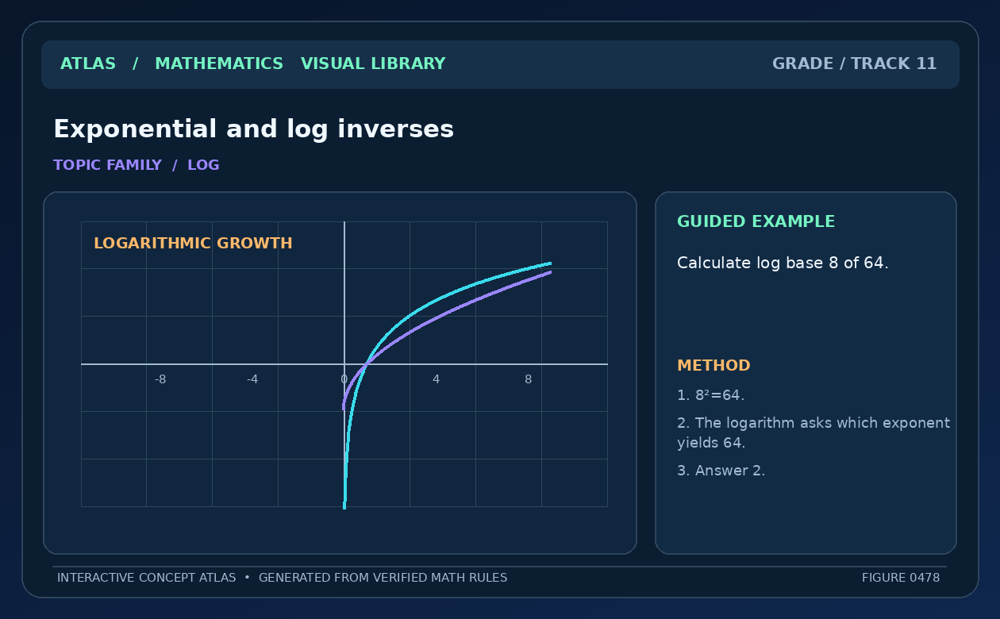
Calculate log base 8 of 64.
- 8²=64.
- The logarithm asks which exponent yields 64.
- Answer 2.
What is log base 4 of 64?
Hint: Logarithm is the inverse of exponentiation.
Show answer and verify
3
Check the units, inputs and intermediate steps. Different solution methods may be valid.
Domain restrictions for logarithms
Domain restrictions for logarithms: A logarithm gives the exponent required to obtain a value from a base. Logarithmic inputs must be positive for real-valued logs.
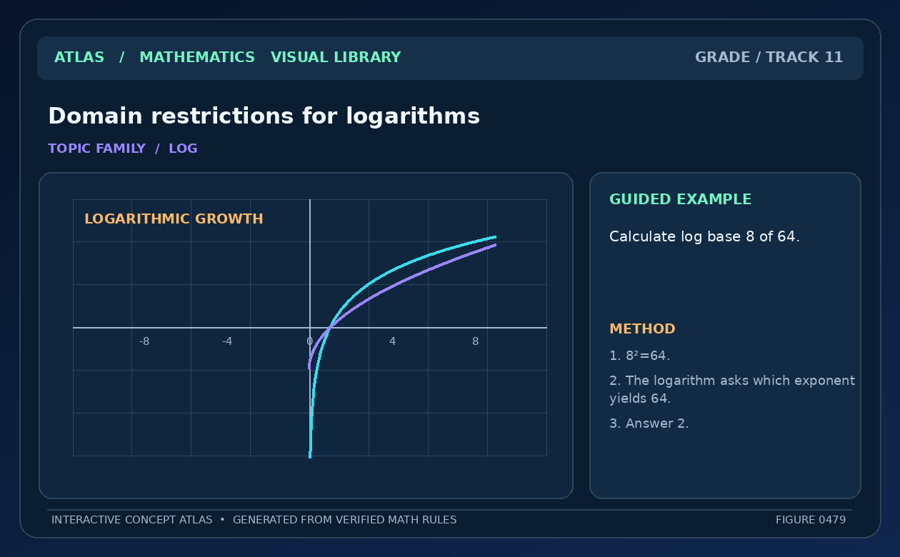
Calculate log base 8 of 64.
- 8²=64.
- The logarithm asks which exponent yields 64.
- Answer 2.
What is log base 3 of 27?
Hint: Logarithm is the inverse of exponentiation.
Show answer and verify
3
Check the units, inputs and intermediate steps. Different solution methods may be valid.
Rational expression domains
Rational expression domains: A rational function is a quotient of polynomials on a domain excluding zero denominators. Classify canceled holes separately from uncanceled vertical asymptotes.
Analyze f(x)=1/(x−9).
- The denominator vanishes when x−9=0.
- Solve x=9.
- x=9 is excluded from the real domain.
For g(x)=1/(x−4), find the excluded x-value.
Hint: Set denominator to zero.
Show answer and verify
4
Check the units, inputs and intermediate steps. Different solution methods may be valid.
Rational expression multiplication
Rational expression multiplication: A rational function is a quotient of polynomials on a domain excluding zero denominators. Classify canceled holes separately from uncanceled vertical asymptotes.
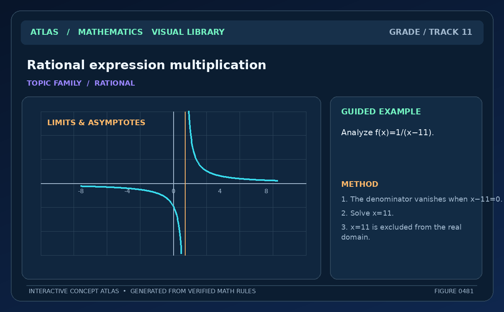
Analyze f(x)=1/(x−11).
- The denominator vanishes when x−11=0.
- Solve x=11.
- x=11 is excluded from the real domain.
For g(x)=1/(x−11), find the excluded x-value.
Hint: Set denominator to zero.
Show answer and verify
11
Check the units, inputs and intermediate steps. Different solution methods may be valid.
Rational expression division
Rational expression division: A rational function is a quotient of polynomials on a domain excluding zero denominators. Classify canceled holes separately from uncanceled vertical asymptotes.
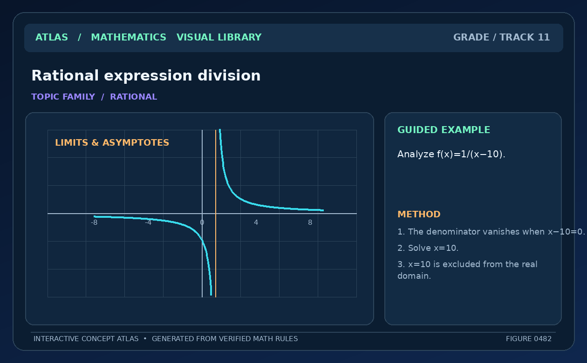
Analyze f(x)=1/(x−10).
- The denominator vanishes when x−10=0.
- Solve x=10.
- x=10 is excluded from the real domain.
For g(x)=1/(x−3), find the excluded x-value.
Hint: Set denominator to zero.
Show answer and verify
3
Check the units, inputs and intermediate steps. Different solution methods may be valid.
Rational expression addition
Rational expression addition: A rational function is a quotient of polynomials on a domain excluding zero denominators. Classify canceled holes separately from uncanceled vertical asymptotes.
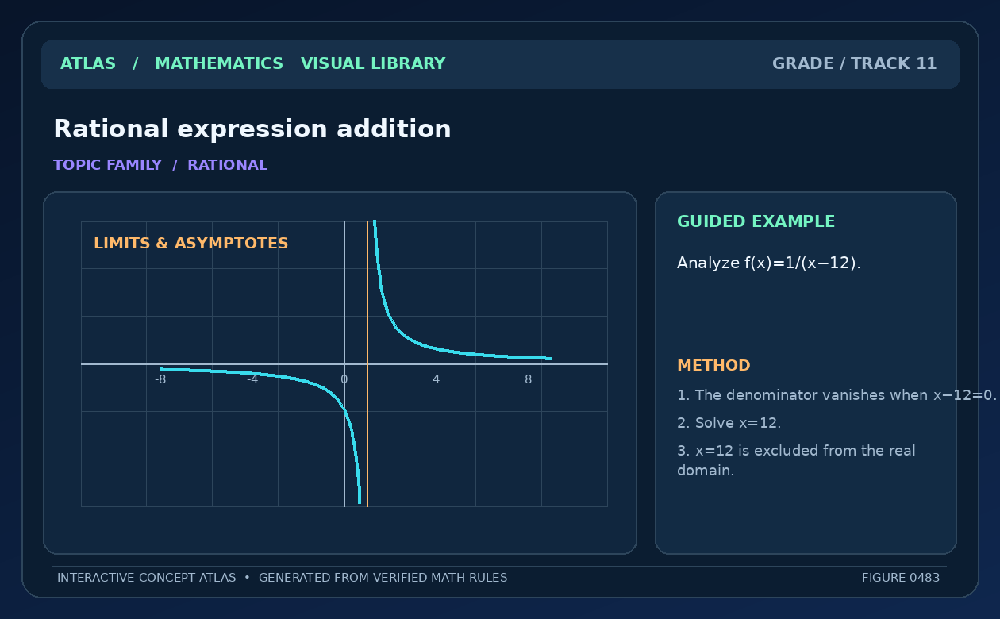
Analyze f(x)=1/(x−12).
- The denominator vanishes when x−12=0.
- Solve x=12.
- x=12 is excluded from the real domain.
For g(x)=1/(x−3), find the excluded x-value.
Hint: Set denominator to zero.
Show answer and verify
3
Check the units, inputs and intermediate steps. Different solution methods may be valid.
Rational equations
Rational equations: A rational function is a quotient of polynomials on a domain excluding zero denominators. Classify canceled holes separately from uncanceled vertical asymptotes.
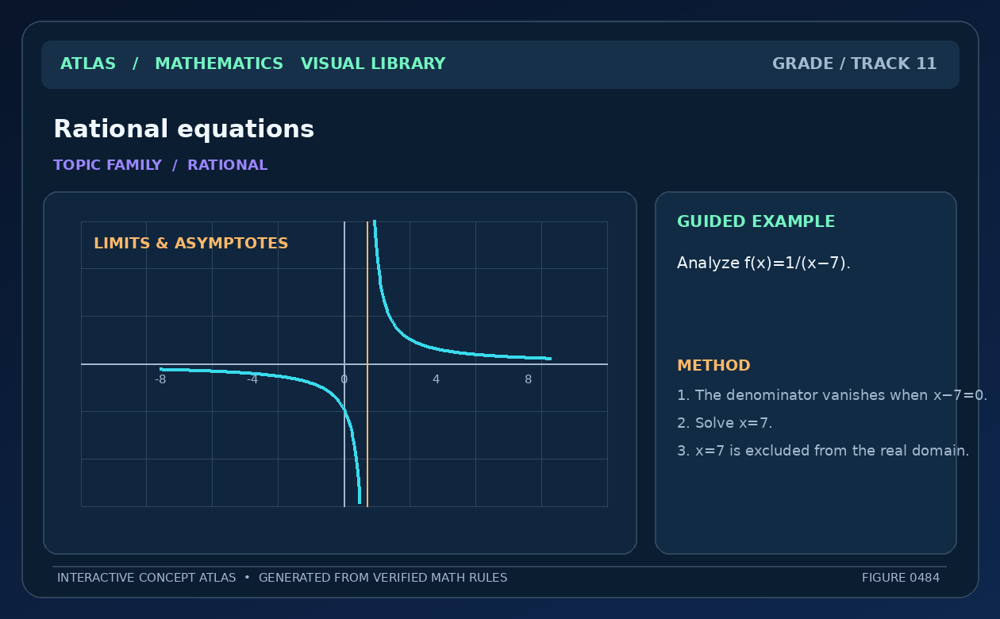
Analyze f(x)=1/(x−7).
- The denominator vanishes when x−7=0.
- Solve x=7.
- x=7 is excluded from the real domain.
For g(x)=1/(x−8), find the excluded x-value.
Hint: Set denominator to zero.
Show answer and verify
8
Check the units, inputs and intermediate steps. Different solution methods may be valid.
Removable discontinuities
Removable discontinuities: A rational function is a quotient of polynomials on a domain excluding zero denominators. Classify canceled holes separately from uncanceled vertical asymptotes.
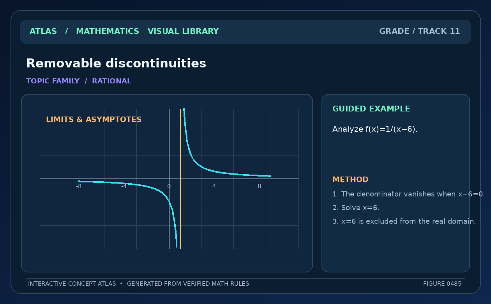
Analyze f(x)=1/(x−6).
- The denominator vanishes when x−6=0.
- Solve x=6.
- x=6 is excluded from the real domain.
For g(x)=1/(x−5), find the excluded x-value.
Hint: Set denominator to zero.
Show answer and verify
5
Check the units, inputs and intermediate steps. Different solution methods may be valid.
Vertical asymptotes
Vertical asymptotes: A rational function is a quotient of polynomials on a domain excluding zero denominators. Classify canceled holes separately from uncanceled vertical asymptotes.
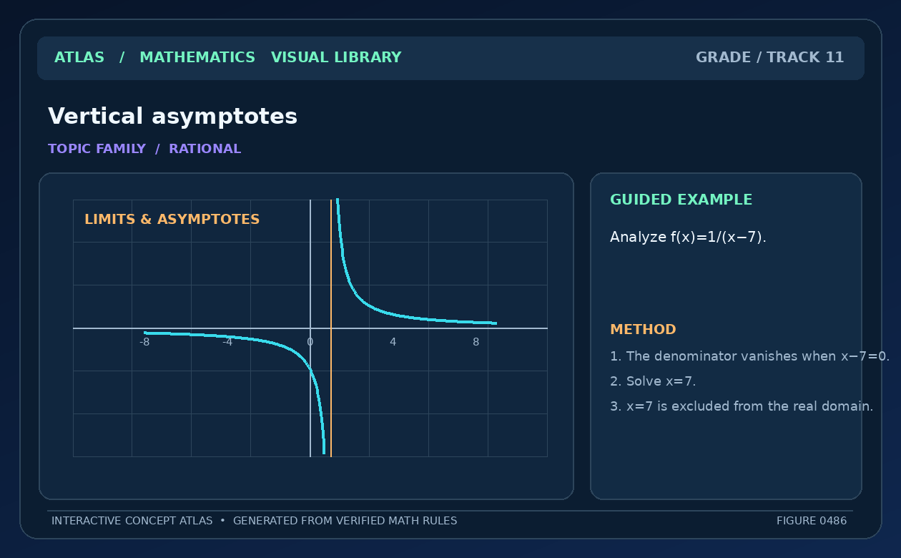
Analyze f(x)=1/(x−7).
- The denominator vanishes when x−7=0.
- Solve x=7.
- x=7 is excluded from the real domain.
For g(x)=1/(x−5), find the excluded x-value.
Hint: Set denominator to zero.
Show answer and verify
5
Check the units, inputs and intermediate steps. Different solution methods may be valid.
Horizontal and slant asymptotes
Horizontal and slant asymptotes: A rational function is a quotient of polynomials on a domain excluding zero denominators. Classify canceled holes separately from uncanceled vertical asymptotes.
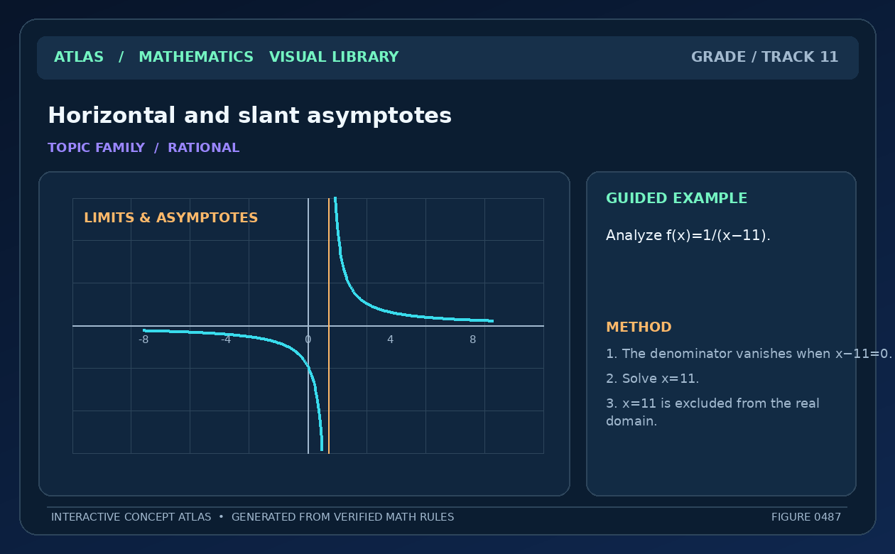
Analyze f(x)=1/(x−11).
- The denominator vanishes when x−11=0.
- Solve x=11.
- x=11 is excluded from the real domain.
For g(x)=1/(x−11), find the excluded x-value.
Hint: Set denominator to zero.
Show answer and verify
11
Check the units, inputs and intermediate steps. Different solution methods may be valid.
Radical addition and multiplication
Radical addition and multiplication: Radical expressions use fractional exponents and are constrained by the domain. A real square root requires a nonnegative radicand.
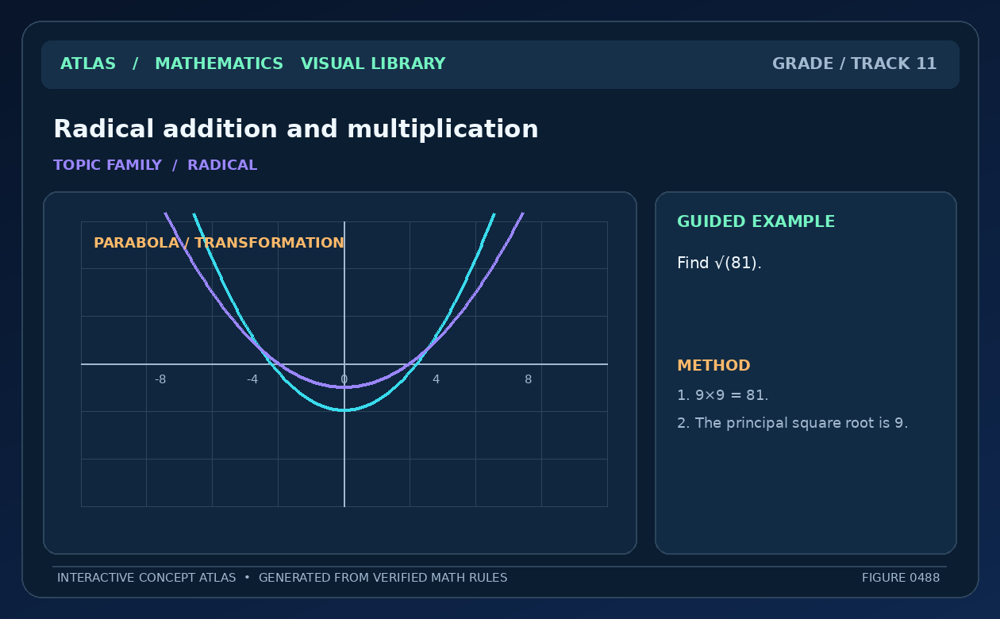
Find √(81).
- 9×9 = 81.
- The principal square root is 9.
Find √(4).
Hint: The principal square root is nonnegative.
Show answer and verify
2
Check the units, inputs and intermediate steps. Different solution methods may be valid.
Rationalizing denominators
Rationalizing denominators: Radical expressions use fractional exponents and are constrained by the domain. A real square root requires a nonnegative radicand.
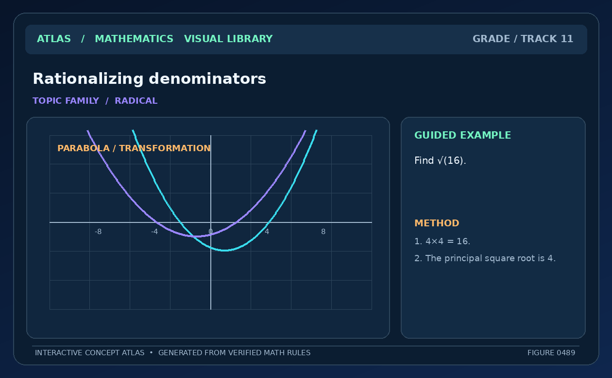
Find √(16).
- 4×4 = 16.
- The principal square root is 4.
Find √(25).
Hint: The principal square root is nonnegative.
Show answer and verify
5
Check the units, inputs and intermediate steps. Different solution methods may be valid.
Rational exponent equations
Rational exponent equations: Radical expressions use fractional exponents and are constrained by the domain. A real square root requires a nonnegative radicand.
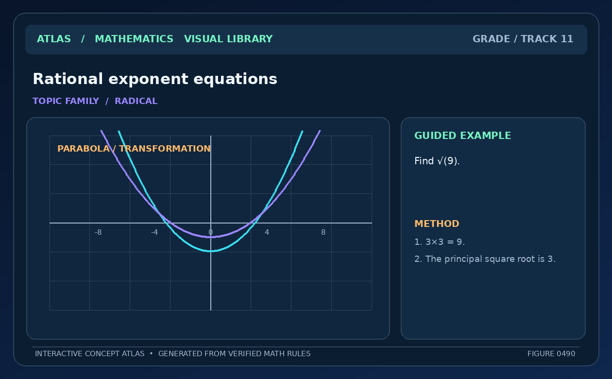
Find √(9).
- 3×3 = 9.
- The principal square root is 3.
Find √(49).
Hint: The principal square root is nonnegative.
Show answer and verify
7
Check the units, inputs and intermediate steps. Different solution methods may be valid.
Imaginary unit and powers
Imaginary unit and powers: Use i²=−1 and collect real and imaginary parts separately. Complex conjugation flips the sign of the imaginary part.
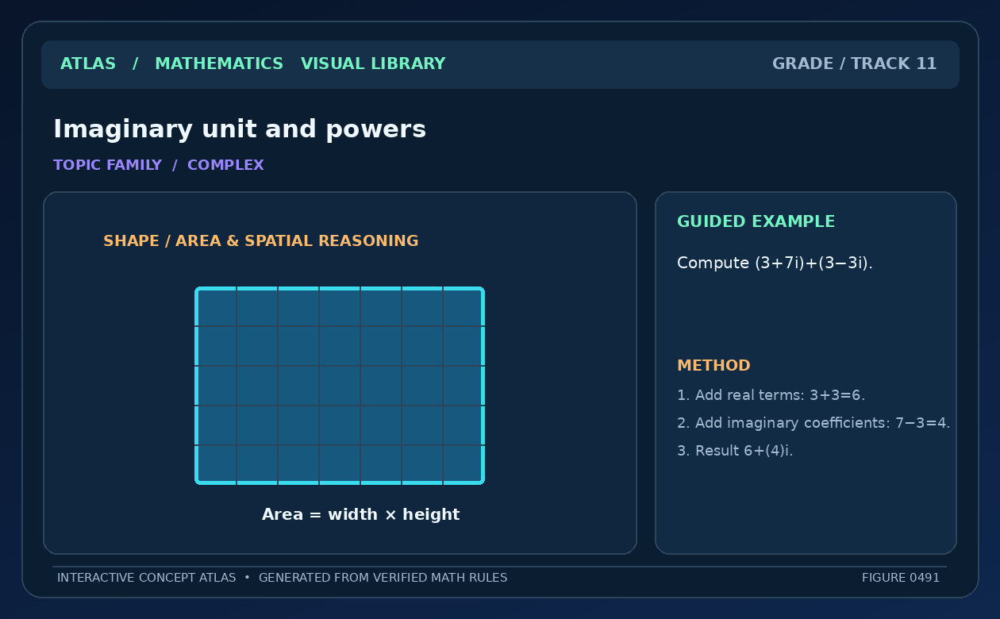
Compute (3+7i)+(3−3i).
- Add real terms: 3+3=6.
- Add imaginary coefficients: 7−3=4.
- Result 6+(4)i.
What is the real part of (3+7i)+(3+2i)?
Hint: Add the real coefficients separately.
Show answer and verify
6
Check the units, inputs and intermediate steps. Different solution methods may be valid.
Complex number operations
Complex number operations: Use i²=−1 and collect real and imaginary parts separately. Complex conjugation flips the sign of the imaginary part.
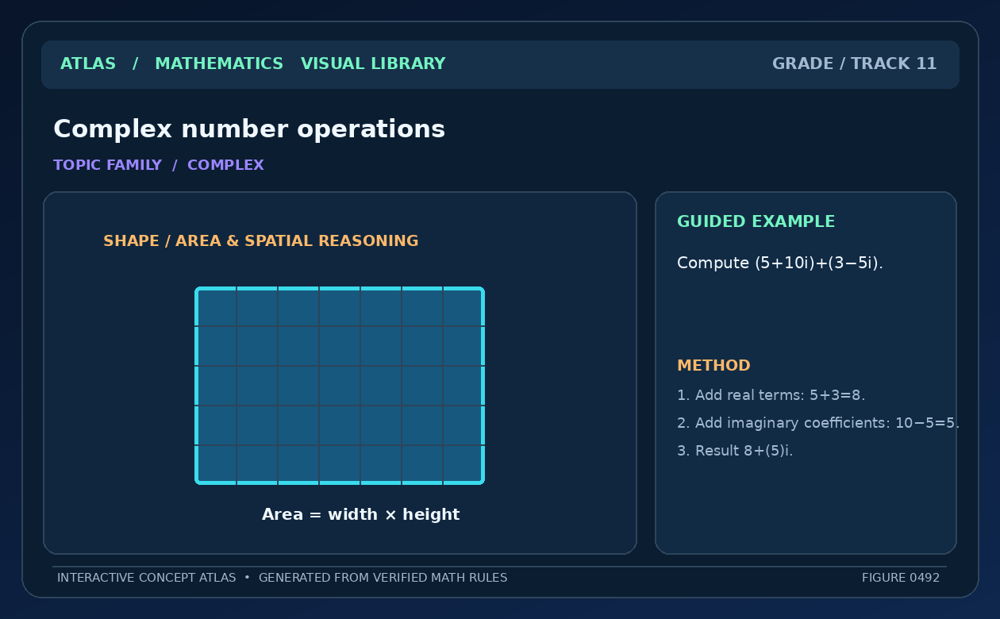
Compute (5+10i)+(3−5i).
- Add real terms: 5+3=8.
- Add imaginary coefficients: 10−5=5.
- Result 8+(5)i.
What is the real part of (5+10i)+(3+2i)?
Hint: Add the real coefficients separately.
Show answer and verify
8
Check the units, inputs and intermediate steps. Different solution methods may be valid.
Complex conjugates
Complex conjugates: Use i²=−1 and collect real and imaginary parts separately. Complex conjugation flips the sign of the imaginary part.
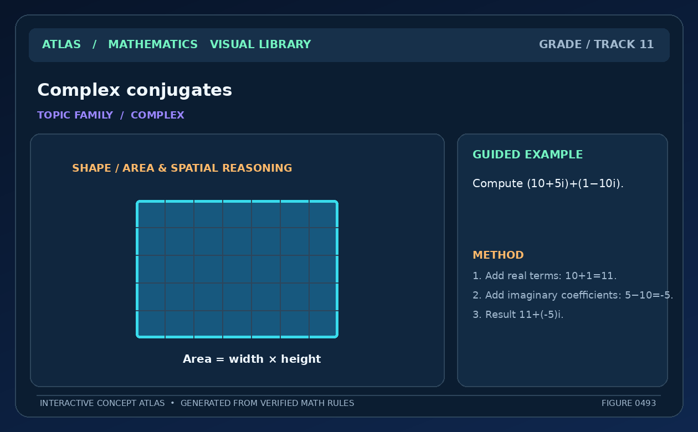
Compute (10+5i)+(1−10i).
- Add real terms: 10+1=11.
- Add imaginary coefficients: 5−10=-5.
- Result 11+(-5)i.
What is the real part of (10+5i)+(1+2i)?
Hint: Add the real coefficients separately.
Show answer and verify
11
Check the units, inputs and intermediate steps. Different solution methods may be valid.
Modulus of complex numbers
Modulus of complex numbers: Use i²=−1 and collect real and imaginary parts separately. Complex conjugation flips the sign of the imaginary part.
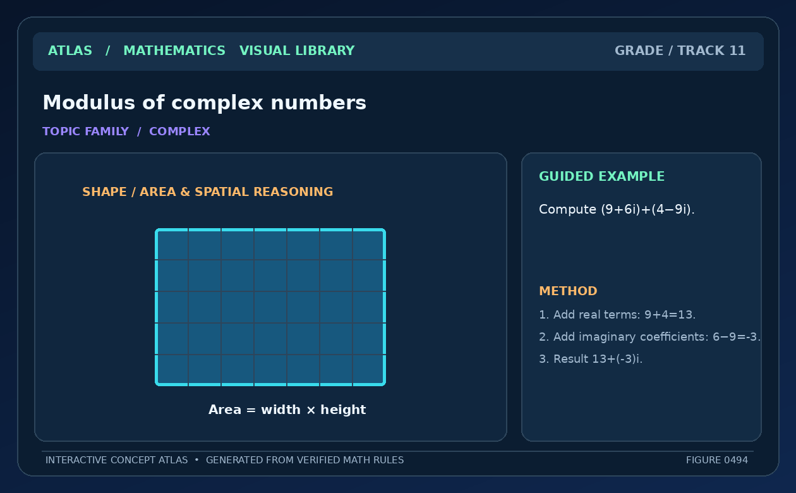
Compute (9+6i)+(4−9i).
- Add real terms: 9+4=13.
- Add imaginary coefficients: 6−9=-3.
- Result 13+(-3)i.
What is the real part of (9+6i)+(4+2i)?
Hint: Add the real coefficients separately.
Show answer and verify
13
Check the units, inputs and intermediate steps. Different solution methods may be valid.
Complex solutions to quadratics
Complex solutions to quadratics: Use i²=−1 and collect real and imaginary parts separately. Complex conjugation flips the sign of the imaginary part.
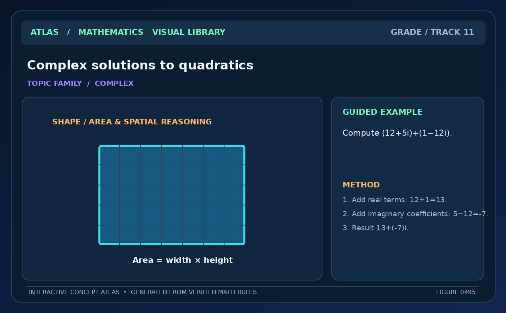
Compute (12+5i)+(1−12i).
- Add real terms: 12+1=13.
- Add imaginary coefficients: 5−12=-7.
- Result 13+(-7)i.
What is the real part of (12+5i)+(1+2i)?
Hint: Add the real coefficients separately.
Show answer and verify
13
Check the units, inputs and intermediate steps. Different solution methods may be valid.
Arithmetic sequence formulas
Arithmetic sequence formulas: Express the nth term through a pattern or recurrence, then verify initial terms. An arithmetic sequence adds a constant difference at each step.
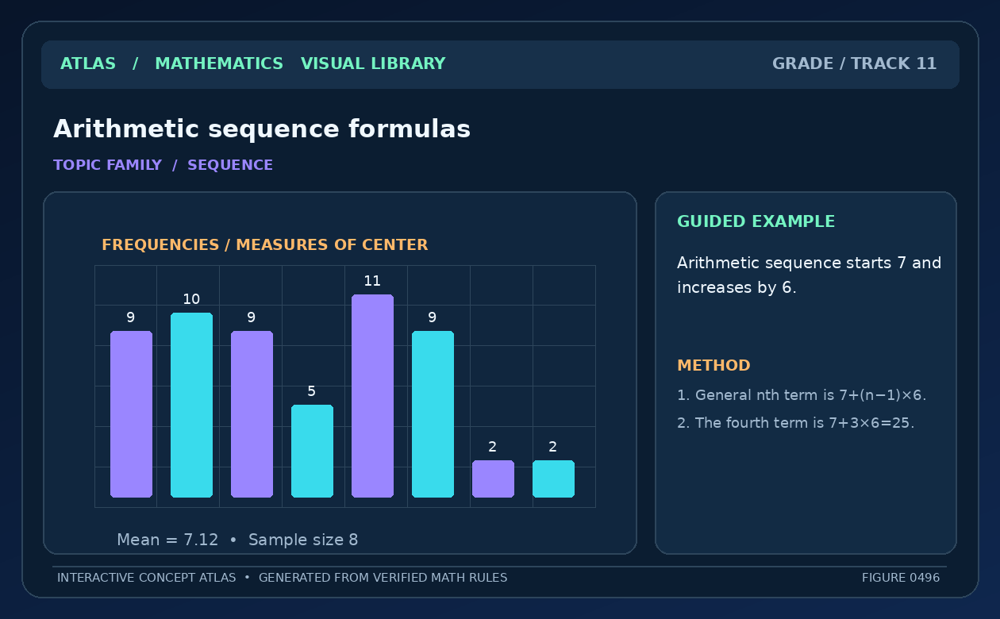
Arithmetic sequence starts 7 and increases by 6.
- General nth term is 7+(n−1)×6.
- The fourth term is 7+3×6=25.
Find the fifth term of start 7, step 6.
Hint: The fifth term has four increments.
Show answer and verify
31
Check the units, inputs and intermediate steps. Different solution methods may be valid.
Geometric sequence formulas
Geometric sequence formulas: Express the nth term through a pattern or recurrence, then verify initial terms. An arithmetic sequence adds a constant difference at each step.
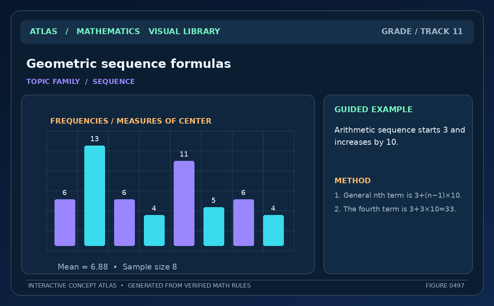
Arithmetic sequence starts 3 and increases by 10.
- General nth term is 3+(n−1)×10.
- The fourth term is 3+3×10=33.
Find the fifth term of start 3, step 10.
Hint: The fifth term has four increments.
Show answer and verify
43
Check the units, inputs and intermediate steps. Different solution methods may be valid.
Finite arithmetic series
Finite arithmetic series: Express the nth term through a pattern or recurrence, then verify initial terms. An arithmetic sequence adds a constant difference at each step.
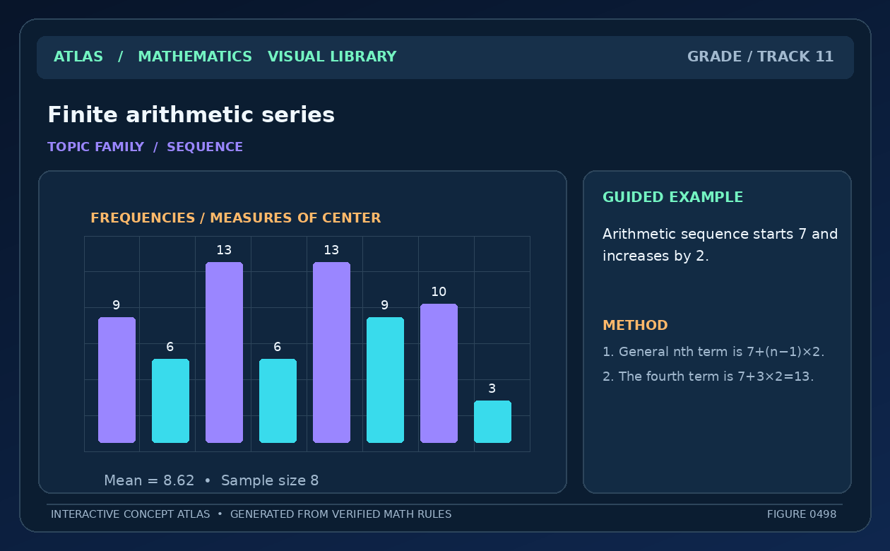
Arithmetic sequence starts 7 and increases by 2.
- General nth term is 7+(n−1)×2.
- The fourth term is 7+3×2=13.
Find the fifth term of start 7, step 2.
Hint: The fifth term has four increments.
Show answer and verify
15
Check the units, inputs and intermediate steps. Different solution methods may be valid.
Finite geometric series
Finite geometric series: Express the nth term through a pattern or recurrence, then verify initial terms. An arithmetic sequence adds a constant difference at each step.
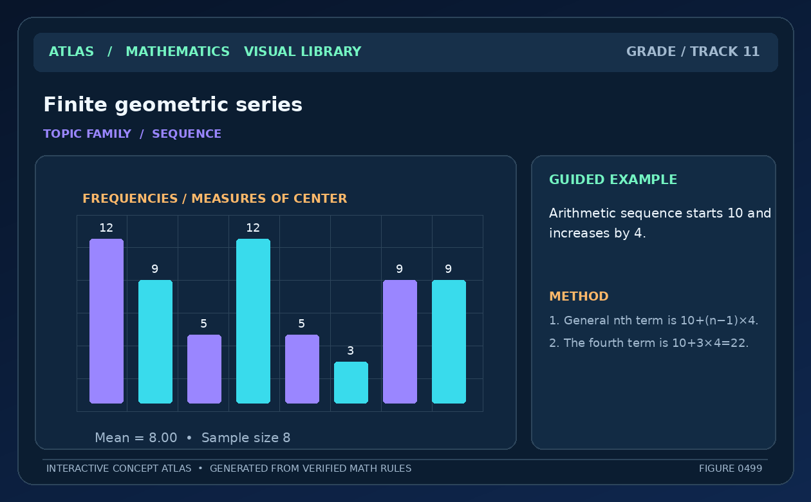
Arithmetic sequence starts 10 and increases by 4.
- General nth term is 10+(n−1)×4.
- The fourth term is 10+3×4=22.
Find the fifth term of start 10, step 4.
Hint: The fifth term has four increments.
Show answer and verify
26
Check the units, inputs and intermediate steps. Different solution methods may be valid.
Recursive definitions
Recursive definitions: Express the nth term through a pattern or recurrence, then verify initial terms. An arithmetic sequence adds a constant difference at each step.
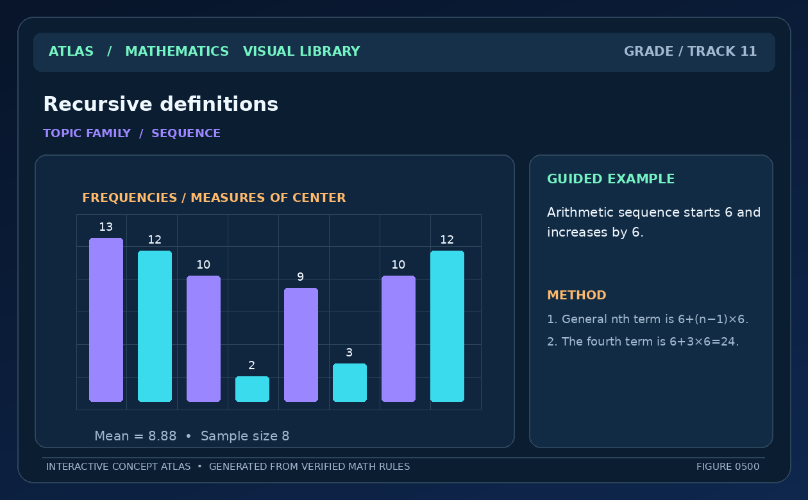
Arithmetic sequence starts 6 and increases by 6.
- General nth term is 6+(n−1)×6.
- The fourth term is 6+3×6=24.
Find the fifth term of start 6, step 6.
Hint: The fifth term has four increments.
Show answer and verify
30
Check the units, inputs and intermediate steps. Different solution methods may be valid.
Mathematical induction introduction
Mathematical induction introduction: Express the nth term through a pattern or recurrence, then verify initial terms. An arithmetic sequence adds a constant difference at each step.
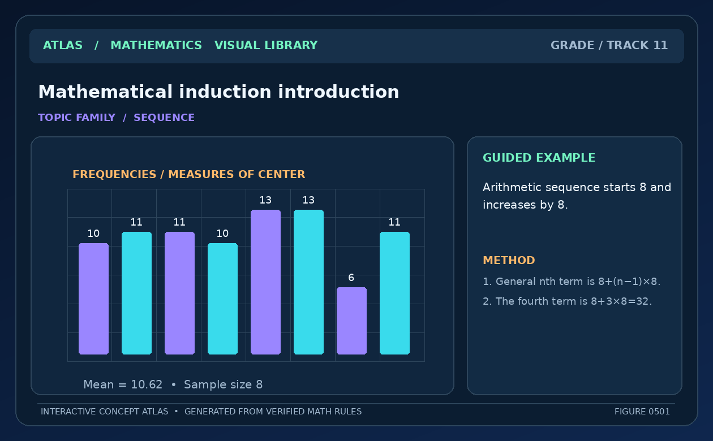
Arithmetic sequence starts 8 and increases by 8.
- General nth term is 8+(n−1)×8.
- The fourth term is 8+3×8=32.
Find the fifth term of start 8, step 8.
Hint: The fifth term has four increments.
Show answer and verify
40
Check the units, inputs and intermediate steps. Different solution methods may be valid.
Matrices and augmented systems
Matrices and augmented systems: Use consistent row-column dimensions and compute entries systematically. For matrix multiplication the inner dimensions must match.
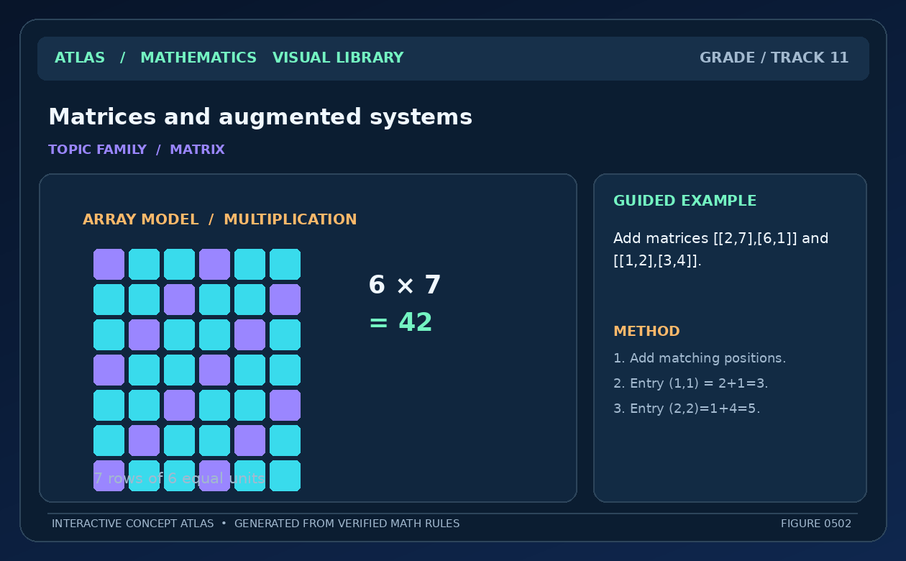
Add matrices [[2,7],[6,1]] and [[1,2],[3,4]].
- Add matching positions.
- Entry (1,1) = 2+1=3.
- Entry (2,2)=1+4=5.
What is top-left entry of [[2,7],[1,2]]+[[6,4],[3,5]]?
Hint: Matrix addition is entrywise.
Show answer and verify
8
Check the units, inputs and intermediate steps. Different solution methods may be valid.
Matrix addition
Matrix addition: Use consistent row-column dimensions and compute entries systematically. For matrix multiplication the inner dimensions must match.
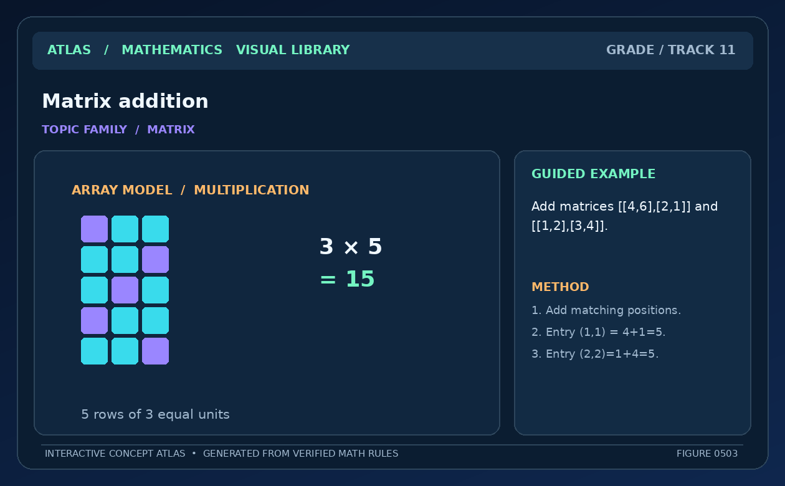
Add matrices [[4,6],[2,1]] and [[1,2],[3,4]].
- Add matching positions.
- Entry (1,1) = 4+1=5.
- Entry (2,2)=1+4=5.
What is top-left entry of [[4,6],[1,2]]+[[2,4],[3,5]]?
Hint: Matrix addition is entrywise.
Show answer and verify
6
Check the units, inputs and intermediate steps. Different solution methods may be valid.
Matrix multiplication
Matrix multiplication: Use consistent row-column dimensions and compute entries systematically. For matrix multiplication the inner dimensions must match.
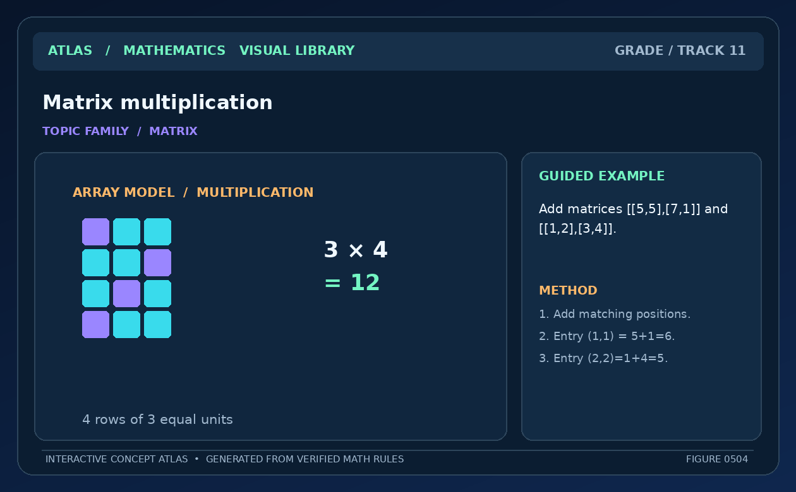
Add matrices [[5,5],[7,1]] and [[1,2],[3,4]].
- Add matching positions.
- Entry (1,1) = 5+1=6.
- Entry (2,2)=1+4=5.
What is top-left entry of [[5,5],[1,2]]+[[7,4],[3,5]]?
Hint: Matrix addition is entrywise.
Show answer and verify
12
Check the units, inputs and intermediate steps. Different solution methods may be valid.
Matrix determinants
Matrix determinants: Use consistent row-column dimensions and compute entries systematically. For matrix multiplication the inner dimensions must match.
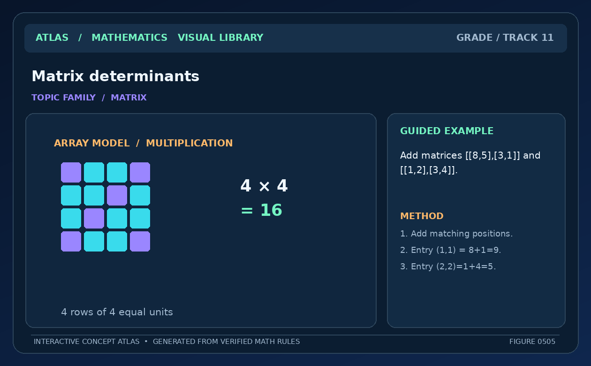
Add matrices [[8,5],[3,1]] and [[1,2],[3,4]].
- Add matching positions.
- Entry (1,1) = 8+1=9.
- Entry (2,2)=1+4=5.
What is top-left entry of [[8,5],[1,2]]+[[3,4],[3,5]]?
Hint: Matrix addition is entrywise.
Show answer and verify
11
Check the units, inputs and intermediate steps. Different solution methods may be valid.
Inverse of a 2 by 2 matrix
Inverse of a 2 by 2 matrix: Use consistent row-column dimensions and compute entries systematically. For matrix multiplication the inner dimensions must match.
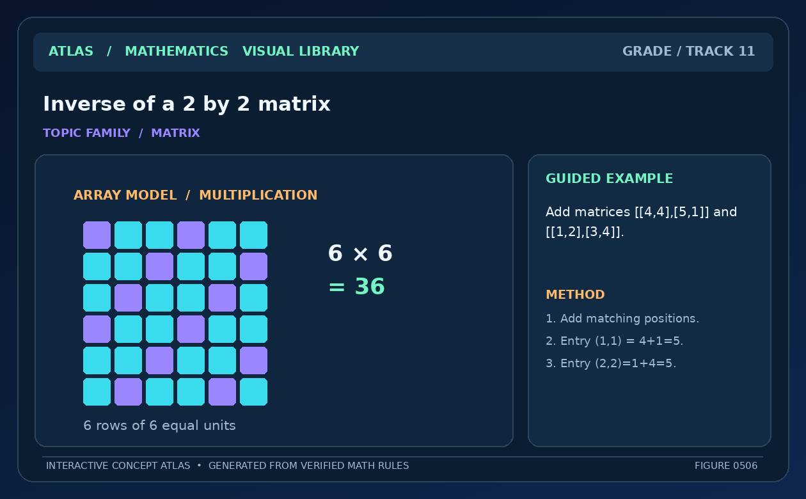
Add matrices [[4,4],[5,1]] and [[1,2],[3,4]].
- Add matching positions.
- Entry (1,1) = 4+1=5.
- Entry (2,2)=1+4=5.
What is top-left entry of [[4,4],[1,2]]+[[5,4],[3,5]]?
Hint: Matrix addition is entrywise.
Show answer and verify
9
Check the units, inputs and intermediate steps. Different solution methods may be valid.
Solving systems with matrices
Solving systems with matrices: Use consistent row-column dimensions and compute entries systematically. For matrix multiplication the inner dimensions must match.
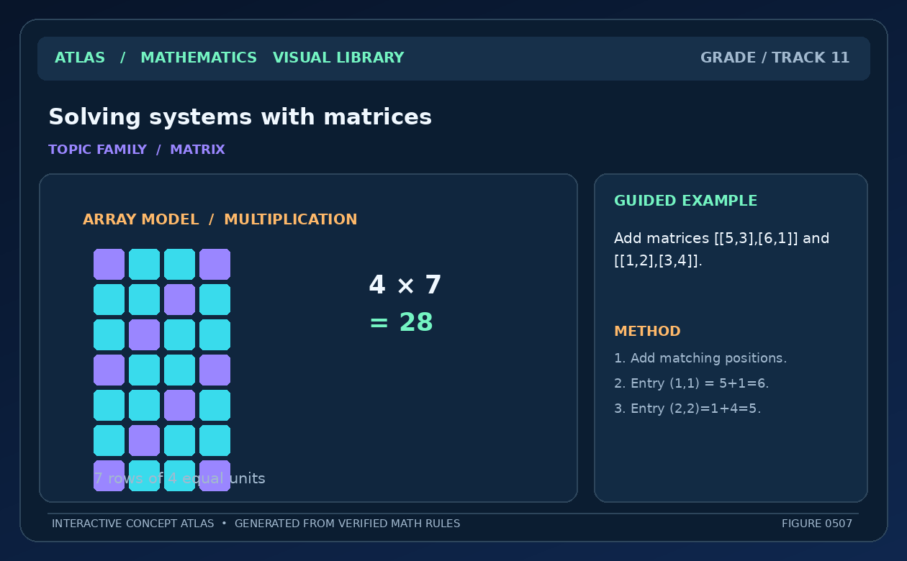
Add matrices [[5,3],[6,1]] and [[1,2],[3,4]].
- Add matching positions.
- Entry (1,1) = 5+1=6.
- Entry (2,2)=1+4=5.
What is top-left entry of [[5,3],[1,2]]+[[6,4],[3,5]]?
Hint: Matrix addition is entrywise.
Show answer and verify
11
Check the units, inputs and intermediate steps. Different solution methods may be valid.
Binomial distributions introduction
Binomial distributions introduction: Organize observations and distinguish measures of center from measures of spread. The mean is the total divided by the number of observations.
Find mean of 5,2,5.
- Add values to get 12.
- Divide by 3.
- Mean = 4.000000.
Mean of 5,7,9?
Hint: Sum observations and divide by count.
Show answer and verify
7
Check the units, inputs and intermediate steps. Different solution methods may be valid.
Probability of independent events
Probability of independent events: Organize observations and distinguish measures of center from measures of spread. The mean is the total divided by the number of observations.
Find mean of 2,4,2.
- Add values to get 8.
- Divide by 3.
- Mean = 2.666667.
Mean of 2,4,6?
Hint: Sum observations and divide by count.
Show answer and verify
4
Check the units, inputs and intermediate steps. Different solution methods may be valid.
Expected values and discrete variables
Expected values and discrete variables: Organize observations and distinguish measures of center from measures of spread. The mean is the total divided by the number of observations.
Find mean of 8,5,3.
- Add values to get 16.
- Divide by 3.
- Mean = 5.333333.
Mean of 8,10,12?
Hint: Sum observations and divide by count.
Show answer and verify
10
Check the units, inputs and intermediate steps. Different solution methods may be valid.
Compound APR and effective yield
Compound APR and effective yield: Convert a percentage to a decimal and write down the compounding period before computing. A loan APR and an investment APY are not automatically interchangeable.
Calculate one year of simple interest on $500 at 6% APR.
- Convert rate to 0.06.
- Interest = 500×0.06×1.
- Earn $30.00.
Interest on $900 at 6% for one year?
Hint: Simple interest is principal × annual rate × time.
Show answer and verify
54
Check the units, inputs and intermediate steps. Different solution methods may be valid.
Loan payments with fixed rates
Loan payments with fixed rates: Convert a percentage to a decimal and write down the compounding period before computing. A loan APR and an investment APY are not automatically interchangeable.
Calculate one year of simple interest on $300 at 4% APR.
- Convert rate to 0.04.
- Interest = 300×0.04×1.
- Earn $12.00.
Interest on $1000 at 4% for one year?
Hint: Simple interest is principal × annual rate × time.
Show answer and verify
40
Check the units, inputs and intermediate steps. Different solution methods may be valid.
Net present value introduction
Net present value introduction: Convert a percentage to a decimal and write down the compounding period before computing. A loan APR and an investment APY are not automatically interchangeable.
Calculate one year of simple interest on $300 at 5% APR.
- Convert rate to 0.05.
- Interest = 300×0.05×1.
- Earn $15.00.
Interest on $1000 at 5% for one year?
Hint: Simple interest is principal × annual rate × time.
Show answer and verify
50
Check the units, inputs and intermediate steps. Different solution methods may be valid.